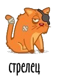
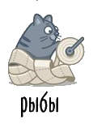

Правила флирта
Флирт - это искусство соблазнения, увлекательная игра, которая вот уже многие века заставляет нас окунуться в омут с головой. Астрология позволяет больше узнать о темпераменте вашего нового знакомого. О том, какой же он на самом деле, вы поймете из нашего гороскопа.
Правила флирта с Овном
Как правильно общаться с мужчиной Овном
Что нужно делать:
- Привлеки его внимание, смотри ему в глаза. Покажи себя во всей красе, чтобы он увидел достойную цель, которую нужно покорить.
- Будь неожиданной, удивляй его. Пусть ваше свидание будет ночью на берегу моря, среди гор.
- Стань сильной и энергичной, ведь Овен всегда может застать тебя врасплох, независимо от намеченных тобой планов. Каждый день - новые приключения.
- Будь готова противостоять его ухаживаниям, но оставайся в то же время романтичной и мани за собой. Овен оценит твою инициативу и независимость.
- Гордись его безудержным темпераментом. Он учится расслаблять и развлекать тебя, и потому сумеет увлечь тебя в вихре страстей.
Чего нельзя делать:
- Стремиться привязать к себе и ущемлять его свободу.
- Быть слишком критичной в сравнении его и других мужчин.
- Флиртовать с другими мужчинами или поддерживать отношения со своим экс-партнером. Овен предпочитает, чтобы ты оставила все это в прошлом, а настоящее полностью посвятила ему.
- Дуться, сердиться слишком долго. Овен не умеет уговаривать слишком долго.
- Находиться в плохом настроении и избегать его общества. Овен решит, что ты не хочешь с ним общаться, хотя это и будет заблуждением.
- Пытаться охладить его пыл. Твоё отношение может нанести ему душевную рану. Живость и темперамент - это натура Овна.
НаверхПравила флирта с Тельцом
Как правильно общаться с мужчиной Тельцом
Что нужно делать:
- Приготовь его любимое блюдо. Заверши вечер со свечами и романтической музыкой.
- Выбери время, чтобы заняться только им. Он оценит вкусную пищу и приятную компанию.
- Будь ласкова и нежна с ним, а результаты превзойдут ожидания.
- Поддерживай его в вопросах карьеры и работы день ото дня.
- Будь искренней с ним, так как Тельцы не выносят фальшь.
Чего нельзя делать:
- Отменять свидание или опаздывать.
- Поступать неожиданно. Телец предсказуем и ожидает того же от партера.
- Если ты будешь его подталкивать к быстрому решению, это может вызвать раздражение у Тельца.
- Быть нетерпеливой. Телец рассчитывает на то, что ему уделят достаточно внимания.
- Быть слишком упрямой. Если он что-то решил, то вряд ли изменит свое решение.
- Тратить слишком много или уделять слишком много внимания материальным вопросам. Телец ценит своё финансовое благополучие и может расценить Ваше поведение, как удар по его безопасности.
- Не будь слишком серьезной. Пусть Ваши отношения будут легкими и приятными.
- Не сомневайся в отношениях. Чувства очень важны для этого знака.
НаверхПравила флирта с Близнецами
Как правильно общаться с мужчиной Близнецом
Что нужно делать:
- Научись флиртовать. Близнецы обожают интригу.
- Будь гибкой и открытой - Близнецы любят игру, и ты, возможно, не будешь единственным партнером
- Стань уклончивой, ускользающей и манящей. Близнецы обожают охоту.
- Интересуйся многим и будь хорошим слушателем.
- Покажи своё красноречие Близнецу. Он может вести интересные разговоры часами.
- Стань интеллектуалкой. Даже в сексе Близнецы предпочитают умных партнеров.
- Ему необходима свобода. Он расширит твои горизонты и научит по-настоящему ценить жизнь.
- Будь веселой и радостной. Близнецы не переносят скуку.
Чего нельзя делать:
- Требовать, чтобы он прекратил флиртовать. Близнецы - это социальный знак. Он не поймет твоего требования потому, что флирт - его натура.
- Быть неинтересным собеседником или плохим слушателем. Разговор быстро ему надоест и в следующий раз он его не начнет.
- Вести себя слишком предсказуемо. Если ты хочешь проводить с ним много времени, нужно быть готовой к некоторым неожиданностям.
- Быть застигнутой врасплох при любых обстоятельствах. Постарайся смотреть снисходительно на его маленькие шалости.
- Стремиться привязать Близнецов слишком сильно. Довольно быстро он ускользнет из твоих объятий прочь.
НаверхПравила флирта с Раком
Как правильно общаться с мужчиной Раком
Что нужно делать:
- Дари много внимания и цени доверие.
- Предпочитай спокойствие и тихие вечера дома. Покажи, что дом для тебя - главная ценность.
- Обязательно поздравляй его в праздники. Не забывай про День Святого Валентина и годовщину вашей первой встречи.
- Покажи ему, что ценишь эмоциональное богатство ваших отношений.
- Открой ему свое сердце, верь в истинность ваших отношений.
Чего нельзя делать:
- Смеяться над ним. Он может воспринять все слишком близко к сердцу.
- Поддаваться перепадам его настроения. Постарайся привыкнуть находиться на американских горках.
- Ожидать, что он станет "большим начальником". У Рака есть свои планы о том, чего он хочет.
- Быть с ним слишком настойчивой. Рак будет противиться этому. Он предпочитает нежность и ласку.
- Обращаться к знакомым со своими проблемами. Он может подумать, что ты недооцениваешь его и держишь "про запас".
НаверхПравила флирта со Львом
Как правильно общаться с мужчиной Львом
Что нужно делать:
- Говори комплименты. Львы любят, когда их хвалят. Твоей наградой будут рыцарская любовь и щедрые подарки.
- Позволь ему царствовать, купаясь в лучах славы и популярности. Лев разделит их с тобой.
- Цени его и воодушевляй на подвиги. Лев не только останется рядом с тобой, но придаст твоей жизни царственное сияние, данное ему от рождения.
- Будь послушной и соглашайся с ним. Он увлечет тебя в мир своих восхитительных фантазий.
- Покажи, что он важен для тебя. Открой ему свое сердце: мужчина этого знака может не просто любить вас, а быть идеальным партнером.
Чего нельзя делать:
- Игнорировать Льва или забывать о его планах, если только не хочешь с ним расстаться. Он подумает, что ты больше не интересуешься им.
- Пытаться указывать ему, что нужно сделать. Льву не нравится терять контроль, он хочет господствовать везде.
- Стремиться переместить его из центра внимания. Лев любит блистать под светом софитов.
- Пытаться уменьшить его тщеславие. Это может ранить вашего избранника серьезнее, чем Вы предполагаете. Его "Я" часто более хрупко, чем кажется.
- Критиковать его публично. Это подорвет доверие Льва. Он окажется уязвленным.
НаверхПравила флирта с Девой
Как правильно общаться с мужчиной Девой
Что нужно делать:
- Будь терпелива и придавай большое внимание деталям. Тогда он приложит все силы, чтобы сделать твою жизнь лучше.
- Покажи ему, что восхищена его усилиями над улучшением всего, что вас окружает. И твой мир будет максимально приближен к совершенству.
- Стань ему другом и интеллектуальным товарищем. Тогда твой любимый мужчина будет знать, что его проницательность и аналитические способности будут оценены по достоинству.
- Твой возлюбленный старается скрасить ваш досуг, когда критикует тебя или анализирует твои поступки. Возможно, в глубине души он понимает, что даже Дева не является совершенством.
Чего нельзя делать:
- Быть ленивой или плохой хозяйкой. Дева любит порядок, особенно в доме, и почувствует неприязнь к твоей лени.
- Брать свои слова обратно, хотя порой он сам поступает также. Он может пообещать слишком много, а потом чувствовать себя "не в своей тарелке" от того, что не сумел оправдать твоих ожиданий.
- Пытаться заставить его есть то, что ему не нравится. Девы очень избирательны и специфичны в вопросах питания.
- Обсуждать его спальню. Его стремление к совершенству распространяется и на его спальню, а ты должна это ценить.
НаверхПравила флирта с Весами
Как правильно общаться с мужчиной Весами
Что нужно делать:
- Сохраняй спокойствие и гармонию. Мужчины-Весы очень ценят равновесие.
- Проявляй интерес к искусству и литературе. Партнер-Весы откроет для тебя истинную ценность музыки и поэзии.
- Прими его маленькие странности и не забывай поздравлять с праздниками, а твой любимый разделит с тобой всю глубину своих чувств.
- Советуйся с ним и спрашивай его мнение о событиях, которые происходят в твоей жизни. Он поможет принять тебе обоснованное и взвешенное решение.
- Пойми, что жизнь с Весами - это постоянное балансирование между причиной и следствием, добром и злом. Твой избранник принесет в твою жизнь равновесие и покой.
Чего нельзя делать:
- Ожидать от Весов принятия мгновенных решений, даже если вопрос не стоит "выеденного яйца". Представители этого знака должны оценить другие альтернативы, а поэтому бывают нерешительными.
- Говорить ему, что он плохо выглядит - он будет беспокоиться о сказанном день и ночь. Весы гордятся тем, что всегда свежи и молоды, по сравнению со своими ровесниками.
- Быть консервативной и предсказуемой - даже если он сильно любит, ты можешь ему надоесть. Весы могут быть довольно капризны.
- Подталкивать к принятию важного решения. Весы любят думать о серьезных вещах медленно и внимательно.
- Упрекать его в лени, высокомерии и "пускании всего на самотёк". Чем чаще ты будешь им это выговаривать, тем сильнее они проявят эти отрицательные качества.
НаверхПравила флирта со Скорпионом
Как правильно общаться с мужчиной Скорпионом
Что нужно делать:
- Восхищайся им каждый раз всё больше. Он оценит твою сексуальную привлекательность и красоту по заслугам.
- Будь готова говорить о своих эротических фантазиях и секретах. Он захочет знать все твои тайные желания и постарается их исполнить.
- Приготовь простыни из шелка и ароматические свечи. А твой Скорпион обеспечит музыкальное сопровождение и эротический массаж.
- Отбрось сомнения и ты поддашься страсти, которую не могла когда-либо представить. Скорпион покажет себя самым страстным и магнетическим партнером, которого ты когда-либо знала.
Чего нельзя делать:
- Обвинять его в том, что он играет на чувствах и нечестен по отношению к тебе. Он может воспринять это, как серьезное оскорбление. Как правило, Скорпионы верны и преданны своим возлюбленным.
- Умышленно играть на его ревности. Он может прийти в бешенство и начать контролировать каждый твой шаг.
- Смеяться над его сексуальными представлениями. Скорпионы известны своей сексуальной изобретательностью и очень гордятся репутацией лучших любовников.
Наверх
Правила флирта со Стрельцом
Как правильно общаться с мужчиной Стрельцом
Что нужно делать:
- Узнай, что ему нравится, и прими это на вооружение. Козерог непременно ответит тебе тем же, учитывая, как много значит это для его знака.
- Прими его желание преуспеть в работе и карьере. Он хочет добиться успеха везде!
- Делай ему небольшие подарки, которые подчеркнут твое внимание к нему и экономность. Он оценит твои усилия и умение разумно тратить деньги.
- Будь терпеливой и ты поймешь, что успеха добиваются те, кто умеет ждать. Созревший Козерог доверится тебе полностью и станет самым преданным мужчиной в твоей жизни.
- Подкрепляй свои слова реальными делами. Козерог покажет, что значит быть настойчивым, верным и постоянным.
Чего нельзя делать:
- Выставлять его дураком на людях! Козероги ненавидят быть униженными при других.
- Делать слишком экстравагантные покупки для него. Козерог может вернуть тебе подарок. Он не приемлет легкомысленных трат.
- Отказываться от своих слов и обещаний. Этот знак зодиака ценит соответствие между словами и делами.
- Ожидать капитуляции после нескольких встреч. Козерог - самый серьезный знак зодиака и, возможно, пройдет не мало времени, прежде чем он полюбит по-настоящему.
- Критиковать его одержимость работой, семьей или чем-то другим. Это основа его натуры, Козерог верит в свои идеалы и он будет работать на благо людей и целей, которые он считает важными.
НаверхПравила флирта с Водолеем
Как правильно общаться с мужчиной Водолеем
Что нужно делать:
- Имей широкий кругозор и свободно рассуждать о различных вещах. Водолей всегда найдет, что добавить и не даст застать себя врасплох.
- Будь незаурядной и особенной, постоянно удивлять. Больше оригинальности и фантазии. Водолей любит сюрпризы, он подхватит твою инициативу.
- Соблюдай дистанцию в эмоциональном плане, по крайней мере, в начале твоего романа. Водолею необходимо личное пространство, чтобы он был счастлив.
- Относись с уважением к его принципам и идеалам. Водолей сделает твой мир лучше и найдет место для творчества.
- Сначала стань ближе с ним духовно, а уже затем - физически. Его внутренний мир пленит тебя и ты окончательно запутаешься в его сетях.
Чего нельзя делать:
- Быть слишком требовательной. Если ты потребуешь от своего мужчины пунктуальности или обязательности, он будет разочарован. Водолей поступает согласно своим желаниям и часто живет в своем мире.
- Ждать серьезных отношений слишком быстро и пытаться стать для него центром вселенной. Водолеи - неутомимые исследователи всего человечества, они не могут ограничиться лишь твоей персоной.
- Пытаться заставить думать его по-другому. Водолей всегда имеет свой независимый взгляд на мир.
- Стремиться привлечь внимание к себе, когда его мысли где-то далеко. Скорее всего он откажется от приглашения и не заметит твоих стараний.
- Пытаться изменить его стиль одежды. Ты можешь решить, что твой мужчина выглядит как "белая ворона", но Водолеи часто одеваются не так, как другие.
Наверх
Правила флирта с Рыбами
Что нужно делать:
- Не прячь свои чувства, можешь пустить слезу, когда смотришь драматический фильм или слушаешь музыку, затронувшую струны твоего сердца. Твой мужчина-Рыбы оценит твою чувствительность и осушит поцелуем слезы.
- Будь отзывчивой и доброй к людям. Он превознесет твои качества до небес и сделает всё, чтобы заслужить твою любовь.
- Научись выражать свою любовь тысячами способов, не говоря о ней вслух. Твой мужчина-Рыбы сможет все прочесть в твоей душе, увидеть в твоих глазах.
- Предложи ему помощь, научи жить в реальном мире, не раня его чувствительность. Он научит тебя видеть падающие звезды и фигуры из облаков.
- Восхищайся великим искусством и изысканным вином. Мужчина этого знака будет любить тебя ещё сильней за это!
Чего нельзя делать:
- Упрекать в мечтательности и предлагать взглянуть на жизнь реально. Рыбам ближе духовный, а не материальный мир.
- Критиковать старые представления о настоящей любви, все эти сердечки и цветочки. Рыбы - настоящие романтики. Они верят в истинную любовь и не удовлетворятся мимолетным флиртом.
- Унижать, даже случайно. Ты можешь ранить его чувства, даже не заметив этого. Мужчина-Рыбы не станет кричать или бросать всё вокруг, когда задеты его чувства, но почувствует себя глубоко несчастным.
- Относиться к вашим отношениям слишком поверхностно, играть с его чувствами. Рыбы не любят такое поведение потому, что оно идет в разрез с его идеей настоящей любви и духовной близости.
- Ограничивать его художественные импульсы, так как Рыбы - знак творчества. Ты можешь лишить его счастья и вдохновения.
НаверхПравила флирта с Козерогом
Как правильно общаться с мужчиной КозерогомЧто нужно делать:
- Узнай, что ему нравится, и прими это на вооружение. Козерог непременно ответит тебе тем же, учитывая, как много значит это для его знака.
- Прими его желание преуспеть в работе и карьере. Он хочет добиться успеха везде!
- Делай ему небольшие подарки, которые подчеркнут твое внимание к нему и экономность. Он оценит твои усилия и умение разумно тратить деньги.
- Будь терпеливой и ты поймешь, что успеха добиваются те, кто умеет ждать. Созревший Козерог доверится тебе полностью и станет самым преданным мужчиной в твоей жизни.
- Подкрепляй свои слова реальными делами. Козерог покажет, что значит быть настойчивым, верным и постоянным.
Чего нельзя делать:
- Выставлять его дураком на людях! Козероги ненавидят быть униженными при других.
- Делать слишком экстравагантные покупки для него. Козерог может вернуть тебе подарок. Он не приемлет легкомысленных трат.
- Отказываться от своих слов и обещаний. Этот знак зодиака ценит соответствие между словами и делами.
- Ожидать капитуляции после нескольких встреч. Козерог - самый серьезный знак зодиака и, возможно, пройдет не мало времени, прежде чем он полюбит по-настоящему.
- Критиковать его одержимость работой, семьей или чем-то другим. Это основа его натуры, Козерог верит в свои идеалы и он будет работать на благо людей и целей, которые он считает важными.
Наверх